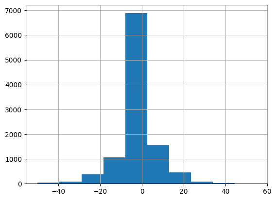

Code
%load_ext jupyter_black
%load_ext autoreload
%autoreload 2Estimating wind buffers of FMS tracks, using the JTWC wind radii, since FMS doesn’t provide wind radii.
Trying first using regression.
%load_ext jupyter_black
%load_ext autoreload
%autoreload 2import ocha_stratus as stratus
import pandas as pd
import geopandas as gpd
import numpy as np
import matplotlib.pyplot as plt
import statsmodels.api as sm
from src.constants import *
from src.blob import PROJECT_PREFIX
from src.datasources.ibtracs import expand_quad_colquery = """
SELECT *
FROM storms.ibtracs_storms
WHERE genesis_basin = 'SP'
"""
with stratus.get_engine(stage="dev").connect() as conn:
df_storms = pd.read_sql(query, conn)query = """
SELECT *
FROM storms.ibtracs_tracks_geo
WHERE basin = 'SP'
"""
with stratus.get_engine(stage="dev").connect() as conn:
gdf_tracks = gpd.read_postgis(query, conn, geom_col="geometry")gdf_tracks = gdf_tracks.merge(df_storms)blob_name = (
f"{PROJECT_PREFIX}/processed/ibtracs/ibtracs_with_usa_radii.parquet"
)
df_tracks_usa = stratus.load_parquet_from_blob(blob_name)df_tracks_usa| sid | provider | valid_time | basin | nature | usa_agency | wind_speed | gust_speed | pressure | max_wind_radius | last_closed_isobar_radius | last_closed_isobar_pressure | quadrant_radius_34 | quadrant_radius_50 | quadrant_radius_64 | point_id | storm_id | longitude | latitude | |
|---|---|---|---|---|---|---|---|---|---|---|---|---|---|---|---|---|---|---|---|
| 0 | 1947017S10168 | bom | 1947-01-20 18:00:00 | SP | TS | jtwc_sh | <NA> | <NA> | <NA> | <NA> | <NA> | <NA> | [nan, nan, nan, nan] | [nan, nan, nan, nan] | [nan, nan, nan, nan] | 1f6b08ed-76ce-40dc-802c-de7907891943 | None | 160.3 | -16.2 |
| 1 | 1948011S16140 | bom | 1948-01-13 18:00:00 | SP | TS | jtwc_sh | <NA> | <NA> | <NA> | <NA> | <NA> | <NA> | [nan, nan, nan, nan] | [nan, nan, nan, nan] | [nan, nan, nan, nan] | 8773d4fc-6b39-42ec-8567-f965b981366c | None | 141.6 | -17.9 |
| 2 | 1948011S20157 | bom | 1948-01-10 12:00:00 | SP | TS | jtwc_sh | <NA> | <NA> | <NA> | <NA> | <NA> | <NA> | [nan, nan, nan, nan] | [nan, nan, nan, nan] | [nan, nan, nan, nan] | c633207a-11fb-4896-bae2-e9fdee29ee81 | None | 157.4 | -20.0 |
| 3 | 1948011S20157 | bom | 1948-01-10 18:00:00 | SP | TS | jtwc_sh | <NA> | <NA> | <NA> | <NA> | <NA> | <NA> | [nan, nan, nan, nan] | [nan, nan, nan, nan] | [nan, nan, nan, nan] | dab7824b-3321-4bb1-83f7-fd0c77281e4e | None | 157.8 | -20.0 |
| 4 | 1948011S20157 | bom | 1948-01-11 00:00:00 | SP | TS | jtwc_sh | <NA> | <NA> | <NA> | <NA> | <NA> | <NA> | [nan, nan, nan, nan] | [nan, nan, nan, nan] | [nan, nan, nan, nan] | 1d73d224-9fc5-4fc0-9044-603dfb1695c6 | None | 158.2 | -20.0 |
| ... | ... | ... | ... | ... | ... | ... | ... | ... | ... | ... | ... | ... | ... | ... | ... | ... | ... | ... | ... |
| 10827 | 2025129S08138 | bom | 2025-05-11 12:00:00 | SP | TS | tcvitals | 35 | 49 | 1000 | 22 | 119 | 1008 | [61.0, 59.0, 26.0, 26.0] | [nan, nan, nan, nan] | [nan, nan, nan, nan] | 4e01d3d8-e391-461e-a268-13633a400425 | None | 138.1 | -8.8 |
| 10828 | 2025129S08138 | bom | 2025-05-11 18:00:00 | SP | TS | tcvitals | 35 | 49 | 1000 | 26 | 119 | 1008 | [26.0, 59.0, 26.0, 17.0] | [nan, nan, nan, nan] | [nan, nan, nan, nan] | 92344e31-0339-4b86-bf42-a38e784b9bb8 | None | 137.9 | -8.6 |
| 10829 | 2025129S08138 | bom | 2025-05-12 00:00:00 | SP | TS | tcvitals | 30 | 45 | 1002 | 26 | 119 | 1010 | [nan, nan, nan, nan] | [nan, nan, nan, nan] | [nan, nan, nan, nan] | 776da658-9698-4301-b9c8-79c78ac33d0d | None | 137.8 | -8.5 |
| 10830 | 2025129S08138 | bom | 2025-05-12 06:00:00 | SP | TS | tcvitals | 30 | 45 | 1002 | 26 | 150 | 1008 | [nan, nan, nan, nan] | [nan, nan, nan, nan] | [nan, nan, nan, nan] | 954e2a0e-fe97-4ef2-898b-f6e1c64a2ec9 | None | 137.6 | -8.3 |
| 10831 | 2025129S08138 | bom | 2025-05-12 12:00:00 | SP | TS | tcvitals | 15 | 34 | 1004 | 52 | 119 | 1010 | [nan, nan, nan, nan] | [nan, nan, nan, nan] | [nan, nan, nan, nan] | bf1b2ba0-5d5c-443e-8c2b-8fdbfcae39a3 | None | 137.6 | -7.9 |
10832 rows × 19 columns
buffer_speeds = [34, 50, 64]
for buffer_speed in buffer_speeds:
df_tracks_usa = expand_quad_col(
df_tracks_usa, f"quadrant_radius_{buffer_speed}"
)already done for quadrant_radius_34
already done for quadrant_radius_50
already done for quadrant_radius_64gdf_tracks_best = gdf_tracks[~gdf_tracks["provisional"]]gdf_tracks_best| wind_speed | pressure | max_wind_radius | last_closed_isobar_radius | last_closed_isobar_pressure | gust_speed | sid | provider | basin | nature | ... | quadrant_radius_64 | point_id | storm_id | geometry | atcf_id | number | season | name | genesis_basin | provisional | |
|---|---|---|---|---|---|---|---|---|---|---|---|---|---|---|---|---|---|---|---|---|---|
| 120 | NaN | 994.0 | NaN | NaN | NaN | NaN | 1907018S13147 | bom | SP | NR | ... | {NaN,NaN,NaN,NaN} | dca3956d-b64f-4775-b43c-2d6636ae4e4a | None | POINT (146.5 -13) | None | 4 | 1907 | None | SP | False |
| 121 | NaN | 993.0 | NaN | NaN | NaN | NaN | 1907018S13147 | bom | SP | TS | ... | {NaN,NaN,NaN,NaN} | c6d125e8-2707-4922-a14f-8d48faa6d155 | None | POINT (145 -15) | None | 4 | 1907 | None | SP | False |
| 122 | NaN | 993.0 | NaN | NaN | NaN | NaN | 1907018S13147 | bom | SP | TS | ... | {NaN,NaN,NaN,NaN} | 302e2c59-3f41-4439-8ce0-b6063c6aaa16 | None | POINT (143 -14) | None | 4 | 1907 | None | SP | False |
| 123 | NaN | 993.0 | NaN | NaN | NaN | NaN | 1907018S13147 | bom | SP | TS | ... | {NaN,NaN,NaN,NaN} | 029dda7b-7ab8-44ad-a268-e8655ea4a003 | None | POINT (142 -13.5) | None | 4 | 1907 | None | SP | False |
| 124 | NaN | 998.0 | NaN | NaN | NaN | NaN | 1907018S13147 | bom | SP | TS | ... | {NaN,NaN,NaN,NaN} | 2929807f-457c-4858-80bc-107e1b4772ea | None | POINT (141.5 -15.6) | None | 4 | 1907 | None | SP | False |
| ... | ... | ... | ... | ... | ... | ... | ... | ... | ... | ... | ... | ... | ... | ... | ... | ... | ... | ... | ... | ... | ... |
| 20850 | 35.0 | 1000.0 | NaN | 119.0 | 1008.0 | 49.0 | 2025129S08138 | bom | SP | TS | ... | {NaN,NaN,NaN,NaN} | 780bbeba-8179-46e5-bb1e-904cf7b36c05 | None | POINT (138.1 -8.8) | SH322025 | 27 | 2025 | None | SP | False |
| 20851 | 35.0 | 1000.0 | NaN | 119.0 | 1008.0 | 49.0 | 2025129S08138 | bom | SP | TS | ... | {NaN,NaN,NaN,NaN} | 37cae45d-f8a7-491c-9d5d-edd06a2dc2ea | None | POINT (137.9 -8.6) | SH322025 | 27 | 2025 | None | SP | False |
| 20852 | 30.0 | 1002.0 | NaN | 119.0 | 1010.0 | 45.0 | 2025129S08138 | bom | SP | TS | ... | {NaN,NaN,NaN,NaN} | d0521216-7f5c-45e9-bef4-00fc97285ee7 | None | POINT (137.8 -8.5) | SH322025 | 27 | 2025 | None | SP | False |
| 20853 | 30.0 | 1002.0 | NaN | 150.0 | 1008.0 | 45.0 | 2025129S08138 | bom | SP | TS | ... | {NaN,NaN,NaN,NaN} | c0997f20-6cbc-4e88-823c-b979a0282dac | None | POINT (137.6 -8.3) | SH322025 | 27 | 2025 | None | SP | False |
| 20854 | 15.0 | 1004.0 | NaN | 119.0 | 1010.0 | 34.0 | 2025129S08138 | bom | SP | TS | ... | {NaN,NaN,NaN,NaN} | a34c6340-9e66-4a46-96bd-422a1068b485 | None | POINT (137.6 -7.9) | SH322025 | 27 | 2025 | None | SP | False |
20071 rows × 23 columns
sorted(gdf_tracks_best["season"].unique())[1907,
1908,
1909,
1910,
1911,
1912,
1913,
1914,
1915,
1916,
1917,
1918,
1919,
1920,
1921,
1922,
1923,
1924,
1925,
1926,
1927,
1928,
1929,
1930,
1931,
1932,
1933,
1934,
1935,
1936,
1937,
1938,
1939,
1940,
1941,
1942,
1943,
1944,
1945,
1946,
1947,
1948,
1949,
1950,
1951,
1952,
1953,
1954,
1955,
1956,
1957,
1958,
1959,
1960,
1961,
1962,
1963,
1964,
1965,
1966,
1967,
1968,
1969,
1970,
1971,
1972,
1973,
1974,
1975,
1976,
1977,
1978,
1979,
1980,
1981,
1982,
1983,
1984,
1985,
1986,
1987,
1988,
1989,
1990,
1991,
1992,
1993,
1994,
1995,
1996,
1997,
1998,
1999,
2000,
2001,
2002,
2003,
2004,
2005,
2006,
2007,
2008,
2009,
2010,
2011,
2012,
2013,
2014,
2015,
2016,
2017,
2018,
2019,
2020,
2021,
2022,
2023,
2024,
2025]RADIUS_COL = "quadrant_radius_{speed}_{quad}"quads = ["ne", "nw", "se", "sw"]df_tracks_merge = gdf_tracks_best.merge(
df_tracks_usa, on=["sid", "valid_time"], suffixes=("_wmo", "_usa")
)df_tracks_merge.columnsIndex(['wind_speed_wmo', 'pressure_wmo', 'max_wind_radius_wmo',
'last_closed_isobar_radius_wmo', 'last_closed_isobar_pressure_wmo',
'gust_speed_wmo', 'sid', 'provider_wmo', 'basin_wmo', 'nature_wmo',
'valid_time', 'quadrant_radius_34_wmo', 'quadrant_radius_50_wmo',
'quadrant_radius_64_wmo', 'point_id_wmo', 'storm_id_wmo', 'geometry',
'atcf_id', 'number', 'season', 'name', 'genesis_basin', 'provisional',
'provider_usa', 'basin_usa', 'nature_usa', 'usa_agency',
'wind_speed_usa', 'gust_speed_usa', 'pressure_usa',
'max_wind_radius_usa', 'last_closed_isobar_radius_usa',
'last_closed_isobar_pressure_usa', 'quadrant_radius_34_usa',
'quadrant_radius_50_usa', 'quadrant_radius_64_usa', 'point_id_usa',
'storm_id_usa', 'longitude', 'latitude', 'quadrant_radius_34_ne',
'quadrant_radius_34_nw', 'quadrant_radius_34_se',
'quadrant_radius_34_sw', 'quadrant_radius_50_ne',
'quadrant_radius_50_nw', 'quadrant_radius_50_se',
'quadrant_radius_50_sw', 'quadrant_radius_64_ne',
'quadrant_radius_64_nw', 'quadrant_radius_64_se',
'quadrant_radius_64_sw', 'wind_diff'],
dtype='object')for speed in buffer_speeds:
cols = [RADIUS_COL.format(speed=speed, quad=x) for x in quads]
df_tracks_merge[
RADIUS_COL.format(speed=speed, quad="mean")
] = df_tracks_merge[cols].mean(axis=1)df_tracks_merge| wind_speed_wmo | pressure_wmo | max_wind_radius_wmo | last_closed_isobar_radius_wmo | last_closed_isobar_pressure_wmo | gust_speed_wmo | sid | provider_wmo | basin_wmo | nature_wmo | ... | quadrant_radius_50_se | quadrant_radius_50_sw | quadrant_radius_64_ne | quadrant_radius_64_nw | quadrant_radius_64_se | quadrant_radius_64_sw | wind_diff | quadrant_radius_34_mean | quadrant_radius_50_mean | quadrant_radius_64_mean | |
|---|---|---|---|---|---|---|---|---|---|---|---|---|---|---|---|---|---|---|---|---|---|
| 0 | NaN | NaN | NaN | NaN | NaN | NaN | 1947017S10168 | bom | SP | TS | ... | NaN | NaN | NaN | NaN | NaN | NaN | <NA> | NaN | NaN | NaN |
| 1 | NaN | NaN | NaN | NaN | NaN | NaN | 1948011S16140 | bom | SP | TS | ... | NaN | NaN | NaN | NaN | NaN | NaN | <NA> | NaN | NaN | NaN |
| 2 | NaN | NaN | NaN | NaN | NaN | NaN | 1948011S20157 | bom | SP | TS | ... | NaN | NaN | NaN | NaN | NaN | NaN | <NA> | NaN | NaN | NaN |
| 3 | NaN | NaN | NaN | NaN | NaN | NaN | 1948011S20157 | bom | SP | TS | ... | NaN | NaN | NaN | NaN | NaN | NaN | <NA> | NaN | NaN | NaN |
| 4 | NaN | NaN | NaN | NaN | NaN | NaN | 1948011S20157 | bom | SP | TS | ... | NaN | NaN | NaN | NaN | NaN | NaN | <NA> | NaN | NaN | NaN |
| ... | ... | ... | ... | ... | ... | ... | ... | ... | ... | ... | ... | ... | ... | ... | ... | ... | ... | ... | ... | ... | ... |
| 10907 | 35.0 | 1000.0 | NaN | 119.0 | 1008.0 | 49.0 | 2025129S08138 | bom | SP | TS | ... | NaN | NaN | NaN | NaN | NaN | NaN | 0.0 | 43.0 | NaN | NaN |
| 10908 | 35.0 | 1000.0 | NaN | 119.0 | 1008.0 | 49.0 | 2025129S08138 | bom | SP | TS | ... | NaN | NaN | NaN | NaN | NaN | NaN | 0.0 | 32.0 | NaN | NaN |
| 10909 | 30.0 | 1002.0 | NaN | 119.0 | 1010.0 | 45.0 | 2025129S08138 | bom | SP | TS | ... | NaN | NaN | NaN | NaN | NaN | NaN | 0.0 | NaN | NaN | NaN |
| 10910 | 30.0 | 1002.0 | NaN | 150.0 | 1008.0 | 45.0 | 2025129S08138 | bom | SP | TS | ... | NaN | NaN | NaN | NaN | NaN | NaN | 0.0 | NaN | NaN | NaN |
| 10911 | 15.0 | 1004.0 | NaN | 119.0 | 1010.0 | 34.0 | 2025129S08138 | bom | SP | TS | ... | NaN | NaN | NaN | NaN | NaN | NaN | 0.0 | NaN | NaN | NaN |
10912 rows × 56 columns
def calc_r2(y_pred, y_true, k):
n = len(y_true)
ss_res = np.sum((y_true - y_pred) ** 2)
ss_tot = np.sum((y_true - np.mean(y_true)) ** 2)
r2 = 1 - ss_res / ss_tot
r2_adj = 1 - (1 - r2) * (n - 1) / (n - k - 1)
return r2, r2_adjcol_sets = (
("wind", ["wind_speed_wmo"]),
("wind_pres", ["wind_speed_wmo", "pressure_wmo"]),
)
dicts = []
df_reg = df_tracks_merge.dropna(subset=["wind_speed_wmo", "pressure_wmo"])
df_reg = df_reg[df_reg["wind_speed_wmo"] >= 0]
conversion_factor = 1
for speed in buffer_speeds:
cutoff_speed = speed * conversion_factor
for quad in quads + ["mean"]:
target_col = RADIUS_COL.format(speed=speed, quad=quad)
df_reg[target_col] = df_reg[target_col].fillna(0)
for cutoff in [True, False]:
if cutoff:
df_model = df_reg[df_reg["wind_speed_wmo"] >= cutoff_speed]
else:
df_model = df_reg
for col_set in col_sets:
var_cols = col_set[1]
X = df_model[var_cols]
y = df_model[target_col]
X = sm.add_constant(X)
model = sm.OLS(y, X).fit()
X_pred = df_reg[var_cols]
X_pred = sm.add_constant(X_pred)
df_reg["pred"] = model.predict(X_pred)
if cutoff:
df_reg["pred"] = df_reg.apply(
lambda row: 0
if row["wind_speed_wmo"] <= cutoff
else row["pred"],
axis=1,
)
df_reg["pred"] = df_reg["pred"].apply(
lambda x: 0 if x < 0 else x
)
r2, r2_adj = calc_r2(
df_reg["pred"], df_reg[target_col], k=len(var_cols)
)
dicts.append(
{
"col_set": col_set[0],
"cutoff": cutoff,
"speed": speed,
"quad": quad,
"r2": r2,
"r2_adj": r2_adj,
"summary": model.summary(),
"params": model.params,
}
)
# for plot_col in ["wind_speed_wmo", "pressure_wmo"]:
# df_reg.plot.scatter(
# x=plot_col,
# y=target_col,
# alpha=0.1,
# )df_reg[["wind_speed_wmo", "pressure_wmo"]].corr()| wind_speed_wmo | pressure_wmo | |
|---|---|---|
| wind_speed_wmo | 1.000000 | -0.967436 |
| pressure_wmo | -0.967436 | 1.000000 |
df_r2 = pd.DataFrame(dicts)df_r2[df_r2["quad"] == "mean"]| col_set | cutoff | speed | quad | r2 | r2_adj | summary | params | |
|---|---|---|---|---|---|---|---|---|
| 16 | wind | True | 34 | mean | 0.124057 | 0.123973 | OLS Regression ... | const 0.330641 wind_speed_wmo 0... |
| 17 | wind_pres | True | 34 | mean | 0.130680 | 0.130513 | OLS Regression ... | const -482.626782 wind_speed_wmo ... |
| 18 | wind | False | 34 | mean | 0.134587 | 0.134503 | OLS Regression ... | const -9.683708 wind_speed_wmo 0... |
| 19 | wind_pres | False | 34 | mean | 0.136667 | 0.136501 | OLS Regression ... | const -450.050374 wind_speed_wmo ... |
| 36 | wind | True | 50 | mean | 0.216839 | 0.216764 | OLS Regression ... | const -9.616171 wind_speed_wmo 0... |
| 37 | wind_pres | True | 50 | mean | 0.247978 | 0.247833 | OLS Regression ... | const -829.599372 wind_speed_wmo ... |
| 38 | wind | False | 50 | mean | 0.223813 | 0.223739 | OLS Regression ... | const -11.52552 wind_speed_wmo ... |
| 39 | wind_pres | False | 50 | mean | 0.234731 | 0.234584 | OLS Regression ... | const -328.345480 wind_speed_wmo ... |
| 56 | wind | True | 64 | mean | 0.278334 | 0.278264 | OLS Regression ... | const -10.795898 wind_speed_wmo ... |
| 57 | wind_pres | True | 64 | mean | 0.326307 | 0.326178 | OLS Regression ... | const -628.360791 wind_speed_wmo ... |
| 58 | wind | False | 64 | mean | 0.258214 | 0.258143 | OLS Regression ... | const -6.618191 wind_speed_wmo 0... |
| 59 | wind_pres | False | 64 | mean | 0.262354 | 0.262212 | OLS Regression ... | const -73.380294 wind_speed_wmo ... |
df_r2[
(df_r2["col_set"] == "wind_pres")
& df_r2["cutoff"]
& (df_r2["quad"] == "mean")
]["summary"].apply(display)| Dep. Variable: | quadrant_radius_34_mean | R-squared: | 0.061 |
| Model: | OLS | Adj. R-squared: | 0.061 |
| Method: | Least Squares | F-statistic: | 224.0 |
| Date: | Mon, 29 Sep 2025 | Prob (F-statistic): | 5.84e-95 |
| Time: | 17:01:08 | Log-Likelihood: | -36349. |
| No. Observations: | 6859 | AIC: | 7.270e+04 |
| Df Residuals: | 6856 | BIC: | 7.272e+04 |
| Df Model: | 2 | ||
| Covariance Type: | nonrobust |
| coef | std err | t | P>|t| | [0.025 | 0.975] | |
| const | -482.6268 | 127.422 | -3.788 | 0.000 | -732.413 | -232.840 |
| wind_speed_wmo | 1.0338 | 0.116 | 8.934 | 0.000 | 0.807 | 1.261 |
| pressure_wmo | 0.4695 | 0.124 | 3.791 | 0.000 | 0.227 | 0.712 |
| Omnibus: | 940.345 | Durbin-Watson: | 0.135 |
| Prob(Omnibus): | 0.000 | Jarque-Bera (JB): | 1370.908 |
| Skew: | 1.078 | Prob(JB): | 2.05e-298 |
| Kurtosis: | 3.391 | Cond. No. | 2.13e+05 |
| Dep. Variable: | quadrant_radius_50_mean | R-squared: | 0.098 |
| Model: | OLS | Adj. R-squared: | 0.098 |
| Method: | Least Squares | F-statistic: | 225.9 |
| Date: | Mon, 29 Sep 2025 | Prob (F-statistic): | 7.26e-94 |
| Time: | 17:01:09 | Log-Likelihood: | -19030. |
| No. Observations: | 4151 | AIC: | 3.807e+04 |
| Df Residuals: | 4148 | BIC: | 3.809e+04 |
| Df Model: | 2 | ||
| Covariance Type: | nonrobust |
| coef | std err | t | P>|t| | [0.025 | 0.975] | |
| const | -829.5994 | 72.275 | -11.478 | 0.000 | -971.296 | -687.902 |
| wind_speed_wmo | 1.1480 | 0.072 | 16.049 | 0.000 | 1.008 | 1.288 |
| pressure_wmo | 0.7925 | 0.070 | 11.348 | 0.000 | 0.656 | 0.929 |
| Omnibus: | 832.942 | Durbin-Watson: | 0.191 |
| Prob(Omnibus): | 0.000 | Jarque-Bera (JB): | 1446.699 |
| Skew: | 1.307 | Prob(JB): | 0.00 |
| Kurtosis: | 4.236 | Cond. No. | 1.91e+05 |
| Dep. Variable: | quadrant_radius_64_mean | R-squared: | 0.138 |
| Model: | OLS | Adj. R-squared: | 0.137 |
| Method: | Least Squares | F-statistic: | 168.1 |
| Date: | Mon, 29 Sep 2025 | Prob (F-statistic): | 1.80e-68 |
| Time: | 17:01:10 | Log-Likelihood: | -8574.2 |
| No. Observations: | 2107 | AIC: | 1.715e+04 |
| Df Residuals: | 2104 | BIC: | 1.717e+04 |
| Df Model: | 2 | ||
| Covariance Type: | nonrobust |
| coef | std err | t | P>|t| | [0.025 | 0.975] | |
| const | -628.3608 | 46.989 | -13.372 | 0.000 | -720.511 | -536.211 |
| wind_speed_wmo | 0.8599 | 0.050 | 17.215 | 0.000 | 0.762 | 0.958 |
| pressure_wmo | 0.5955 | 0.045 | 13.151 | 0.000 | 0.507 | 0.684 |
| Omnibus: | 291.564 | Durbin-Watson: | 0.261 |
| Prob(Omnibus): | 0.000 | Jarque-Bera (JB): | 421.367 |
| Skew: | 1.041 | Prob(JB): | 3.17e-92 |
| Kurtosis: | 3.681 | Cond. No. | 1.46e+05 |
17 None
37 None
57 None
Name: summary, dtype: objectdf_r2.iloc[3]["summary"]| Dep. Variable: | quadrant_radius_34_ne | R-squared: | 0.139 |
| Model: | OLS | Adj. R-squared: | 0.139 |
| Method: | Least Squares | F-statistic: | 838.2 |
| Date: | Mon, 29 Sep 2025 | Prob (F-statistic): | 0.00 |
| Time: | 16:50:54 | Log-Likelihood: | -53939. |
| No. Observations: | 10411 | AIC: | 1.079e+05 |
| Df Residuals: | 10408 | BIC: | 1.079e+05 |
| Df Model: | 2 | ||
| Covariance Type: | nonrobust |
| coef | std err | t | P>|t| | [0.025 | 0.975] | |
| const | -354.9920 | 92.342 | -3.844 | 0.000 | -536.000 | -173.984 |
| wind_speed_wmo | 1.0720 | 0.077 | 13.916 | 0.000 | 0.921 | 1.223 |
| pressure_wmo | 0.3354 | 0.090 | 3.716 | 0.000 | 0.158 | 0.512 |
| Omnibus: | 3093.480 | Durbin-Watson: | 0.223 |
| Prob(Omnibus): | 0.000 | Jarque-Bera (JB): | 8622.195 |
| Skew: | 1.582 | Prob(JB): | 0.00 |
| Kurtosis: | 6.141 | Cond. No. | 2.16e+05 |
r20.26235404579165633WINSTON_SID'2016041S14170'df_tracks_merge["season"].unique()array([1947, 1948, 1949, 1950, 1952, 1954, 1955, 1956, 1960, 1961, 1962,
1963, 1964, 1966, 1967, 1968, 1969, 1970, 1971, 1972, 1973, 1974,
1975, 1976, 1977, 1978, 1979, 1980, 1981, 1982, 1983, 1984, 1985,
1986, 1987, 1988, 1989, 1990, 1991, 1992, 1993, 1994, 1995, 1996,
1997, 1998, 1999, 2000, 2001, 2002, 2003, 2004, 2005, 2006, 2007,
2008, 2009, 2010, 2011, 2012, 2013, 2014, 2015, 2016, 2017, 2018,
2019, 2020, 2021, 2022, 2024, 2023, 2025])df_tracks_merge["wind_diff"] = (
df_tracks_merge["wind_speed_wmo"] - df_tracks_merge["wind_speed_usa"]
)df_tracks_merge["wind_diff"].hist()
df_tracks_merge[df_tracks_merge["wind_diff"].abs() > 10][
["sid", "valid_time", "wind_speed_wmo", "wind_speed_usa", "wind_diff"]
]| sid | valid_time | wind_speed_wmo | wind_speed_usa | wind_diff | |
|---|---|---|---|---|---|
| 166 | 1968094S08156 | 1968-04-07 12:00:00 | 55.0 | 70 | -15.0 |
| 171 | 1968094S08156 | 1968-04-09 12:00:00 | 60.0 | 45 | 15.0 |
| 172 | 1968094S08156 | 1968-04-09 18:00:00 | 65.0 | 40 | 25.0 |
| 173 | 1968094S08156 | 1968-04-10 00:00:00 | 70.0 | 35 | 35.0 |
| 174 | 1968094S08156 | 1968-04-10 06:00:00 | 65.0 | 30 | 35.0 |
| ... | ... | ... | ... | ... | ... |
| 6367 | 2007136S10158 | 2007-05-20 18:00:00 | 30.0 | 15 | 15.0 |
| 6368 | 2007136S10158 | 2007-05-21 00:00:00 | 30.0 | 15 | 15.0 |
| 10394 | 2023036S12163 | 2023-02-08 12:00:00 | 40.0 | 51 | -11.0 |
| 10397 | 2023036S12163 | 2023-02-09 06:00:00 | 50.0 | 64 | -14.0 |
| 10731 | 2023316S09167 | 2023-11-16 00:00:00 | 35.0 | -1 | 36.0 |
1409 rows × 5 columns
df_tracks_merge.set_index("sid").loc[WINSTON_SID][
["wind_speed_wmo", "wind_speed_usa"]
]| wind_speed_wmo | wind_speed_usa | |
|---|---|---|
| sid | ||
| 2016041S14170 | 25.0 | 25 |
| 2016041S14170 | 25.0 | 25 |
| 2016041S14170 | 25.0 | 25 |
| 2016041S14170 | 30.0 | 30 |
| 2016041S14170 | 35.0 | 35 |
| ... | ... | ... |
| 2016041S14170 | 40.0 | 40 |
| 2016041S14170 | 40.0 | 40 |
| 2016041S14170 | 40.0 | 40 |
| 2016041S14170 | 40.0 | 40 |
| 2016041S14170 | 40.0 | 40 |
64 rows × 2 columns